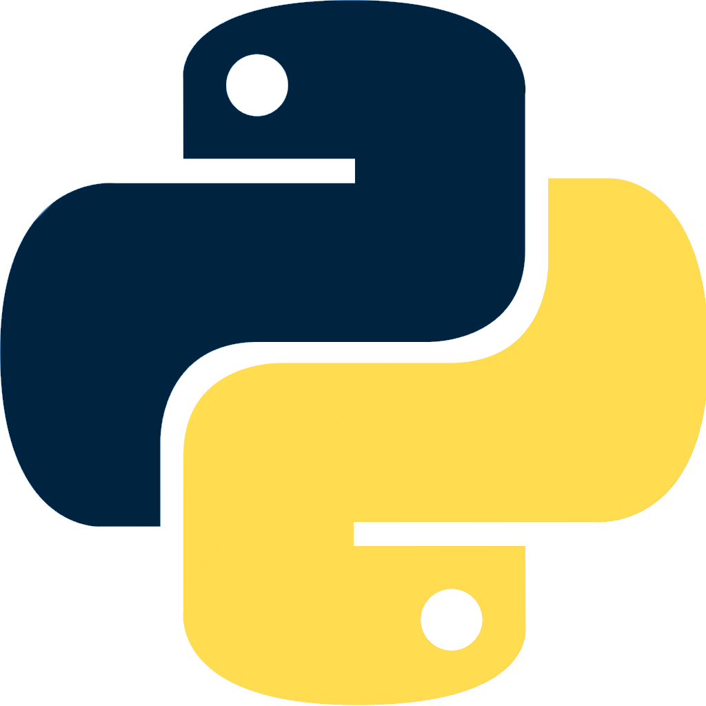

About me
Hi , I am a student keen to know more about almost everything .
I prefer to keep my learning rate rising if not constant .
I came from town called mumbra in Maharashtra India. learned almost everything from youtube,
stackover flow and articles on web . My seniors and elders have always told me that I am a quick learner
want to put that ability to a greate use.
Language story

I learned Python in my early college days. I started it because I had already done C (which is not included) and thought why not add another ability to my arsenal. As soon as I learned it the first project I made was a calculator. Electronics have always attracted me I learned what is Raspberry-pi (I learned C too because of Arduino) I codded few things on my on like switching states over local network sockets it was fun, and then moved on to Django because adding user data to the database using the website was too exciting back then.

The story of javascript goes from my Jr. College days, I had opted for I.T which had basic web development in it, javascript is actually the first programming Language I got to actually know. Although my true learning of javascript was after python while implementing Django for Front End element control. Later got to know about frameworks like React and learned it pretty enough.

This is the language where I built my logic . I spent learning java Because thought exploring is what I should do now as College student .I have tried Android development with java and its pretty not so efficient to made regular android app If not needed hardware access. I learned Data Structure and Algorithm in Java due to this I have a breif understanding of data structure in most of language I know . I also tried to built a App which playes Audio over network in Java
Tech Stack
Django is not the only Backend Tech I know , but my personal opinion is Django is best for most common usage and thats enough , since it comes with built in tons of feature already all I have to do was focus on my buisness logic , created a website hosted it and pulled it down since It was just basic Ecommerce site with Otp verification.
I learned Django and was curious how do you make Android IOS apps and Websites with the same backend, came across on google with term REST-full API got curious and started digging found Django Rest-Frame-Work and found it efficient than Django's default templating system cuz I have to write HTML CSS and jinja tags in it, which makes creating attractive designs Difficult.
I was building websites to practice and found out about SPA randomly and saw React on a blog read about it, learned it and since I know about REST API React was perfect pair, it makes me multiplying UI elements like a card and adding detail elements like loading gif way easy on top of that creating HTML CSS pages in react is a redundant job but it was still better than Django's templating engine.
My every Tech element lays around Django, Every backend needed Database and I decided to learn one too but had a question which one is efficient and is different database are really different I Already know how to write SQL in MY-SQL DB and SQL are pretty much the same everywhere. looked in Django's document,and it says there Django by Default 4 Databases and works fine but It is built around PostgreSQL and it supports its high-end object-oriented features so learned Postgresql
My journey to MongoDB started from my Sem 5 subject. and I pretty much grasped its concepts and thought to connect it with Django and came across Mongo-Engine and its almost the same as Django's ORM or SQL-ALCHEMY of python, Although I haven't used it that much I still know its good because I don't have to create those normal forms here all I need to do is add some fix data and some not.
Linux learning Started with gamming, I was all about the great gaming experience back then and saw ubuntu's desktop environment and Thought it was great and look, it was nothing like I expected but it was interesting as it is completely customizable and yes Raspberry-pi uses Linux as kernel and its just furthermore customized version of Debian, called Raspbian, and I have been using Debian for more than 6 months in a row. Basically, I have a very familiar feeling with Linux systems.
Been to machine learning ,understood different models ,different problems , different solution .I can train some basic model to automate simple task like hand writting detection , face detection , market price prediction and so on. still learning machine learning hoping to understand ANN one day with complete application performace to do it .
Projects

The first project I created to learn backend in django it is a Ecommerce Website where users can upload there product and another users can buy it, It was build with django templating engine (jinja 2) ,
bootstrap . and did some Ajax to make users OTP verification and hosted it on digital ocean with domain name of jaldisell.com had it running for a long time. Its on github see your self.
The Second project I created to learn backend in django it is a Ecommerce Again , but this time I only built backend with Restfull APIs , with Token login and session login togather . it is my highy detailed project so far becuase I did care for normalization form in db here and named it Shoping Bazar. Its on github see your self.
The Third project . Ecommerce again but, only front end , built it using React / React Native . its a complete Restfull interraction between my second project and this one . every API built there is used here efficiently its mostly an Amazon like Ecommerce App works smooth with backend. Its on github see your self.
Intrests
As we have reached the end of the portfolio, yes so far all I learned was Web development. But my actual Intention lies with Mathematics. My goal is to learn Deep Learning, understand how Artificial neurons work and how they mimic the human brain as a processing unit. Machine learning and Artificial Intelligence what I presume will come After that.